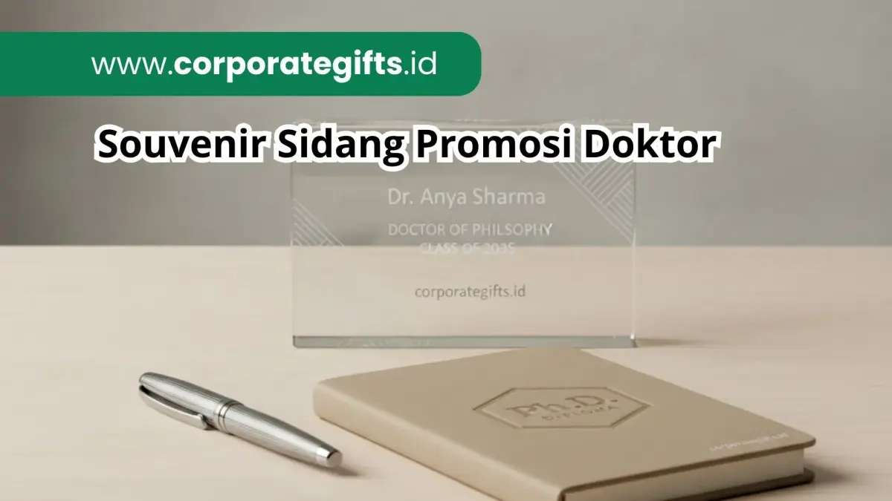

Corporate Gifts ID - Souvenir sidang promosi doktor yang tepat adalah barang elegan, fungsional, dan bisa dipersonalisasi, seperti buku agenda kulit, tumbler stainless steel custom, power bank premium, plakat akrilik atau kristal, dan gantungan kunci logam. Pilih sesuai penerima dan anggaran, lalu tambahkan grafir nama atau logo universitas agar lebih berkesan.
Mengapa Souvenir Penting dalam Sidang Promosi Doktor?
Sidang promosi doktor adalah puncak perjalanan akademik seorang promovendus. Acara ini bukan sekadar ujian akhir terbuka, melainkan perayaan khidmat atas bertahun-tahun riset ilmiah, dedikasi intelektual, dan kontribusi keilmuan yang nyata bagi peradaban. Karena itu, memberikan cinderamata pada momentum sidang promosi doktor menjadi tradisi bermakna, baik dari pihak universitas, pascasarjana, maupun keluarga promovendus.
Cinderamata tidak hanya berfungsi sebagai kenang-kenangan fisik, melainkan bagian utuh dari rangkaian apresiasi kehormatan akademik. Hadiah yang dikurasi dengan baik mampu memancarkan prestise intelektual sekaligus mempertegas citra profesional universitas pengampu. Selain itu, cinderamata menjadi wujud rasa terima kasih yang santun kepada jajaran promotor, ko-promotor, tim penguji, dan tamu kehormatan yang telah mengorbankan waktu demi kelancaran sidang.
Poin Kunci Souvenir Sidang Promosi Doktor:
- Simbol Prestasi Intelektual: Cinderamata doktoral merefleksikan pencapaian akademik tertinggi melalui kurasi material berkelas.
- Segmentasi Penerima: Bedakan jenis cinderamata untuk dewan penguji/promotor (plakat kristal, pulpen premium) dengan keluarga atau tamu umum (tumbler, notebook).
- Personalisasi Mendalam: Penyematan grafir nama promovendus, gelar Dr., judul disertasi, atau logo universitas melipatgandakan nilai memorabilia.
- Fungsionalitas Berkelanjutan: Pilihan barang seperti power bank dan agenda kulit mendukung aktivitas riset dan pengabdian akademisi pasca-kelulusan.
- Manajemen Waktu Pengadaan: Persiapkan produksi custom 3 hingga 4 minggu sebelum jadwal sidang terbuka untuk menjamin hasil yang sempurna.
Kriteria Utama Memilih Souvenir Promosi Doktor
Sebelum menentukan jenis barang yang akan diproduksi, tim panitia atau keluarga promovendus perlu memperhatikan empat kriteria esensial berikut:
- Elegan dan Eksklusif: Desain minimalis berbahan premium seperti kulit sintetis, logam kuningan, kristal, atau kayu solid yang mencerminkan status strata pendidikan tertinggi.
- Fungsional untuk Keseharian: Barang dapat digunakan secara nyata dalam kegiatan mengajar, riset, atau rapat dinas, bukan sekadar pajangan yang berdebu di lemari.
- Personalisasi Khusus (Bespoke): Memuat grafir laser nama penerima, logo universitas, atau kutipan disertasi untuk menciptakan ikatan emosional yang erat.
- Relevan dengan Konteks Akademik: Menunjukkan rasa hormat terhadap etika kampus dan nilai integritas ilmiah.
Rekomendasi Souvenir untuk Sidang Promosi Doktor
Berikut lima rekomendasi souvenir sidang promosi doktor yang paling banyak dipilih karena terbukti berkesan dan bermartabat:
1. Buku Agenda atau Jurnal Eksklusif Kulit Hardcover
Buku catatan bersampul kulit dengan jahitan tepi rapi merupakan perlengkapan tak terpisahkan bagi seorang akademisi. Souvenir ini sangat bermanfaat untuk mencatat gagasan riset lanjutan, agenda seminar internasional, hingga draf materi pengabdian masyarakat. Penambahan teknik emboss logo fakultas dan nama penerima di sudut kanan bawah memberikan sentuhan personal yang sangat mewah.
2. Tumbler Stainless Steel Custom Logo Universitas
Tumbler insulasi berbahan stainless steel 304 food-grade tidak hanya fungsional menjaga suhu minuman hangat atau dingin seharian, tetapi juga mendukung komitmen kampus hijau bebas botol plastik sekali pakai. Dengan teknik grafir laser presisi, nama promotor dan logo universitas akan tertanam abadi tanpa risiko luntur.
3. Power Bank Premium Fast Charging
Dosen, guru besar, dan promovendus memiliki mobilitas tinggi dalam menghadiri simposium ilmiah atau riset lapangan. Power bank berkapasitas 10.000 mAh dengan balutan bodi aluminium anodized custom merupakan cinderamata modern yang sangat menunjang produktivitas gawai digital mereka.

Set plakat akrilik kristal, pulpen logam, dan agenda kulit beremboss logo universitas untuk perayaan akademik.
4. Plakat Kristal atau Akrilik Kustom
Plakat kristal optik berpotongan prisma sering menjadi pilihan souvenir utama untuk dewan pembimbing dan penguji. Dilengkapi kotak beludru eksklusif, plakat ini menjadi simbol prestisius yang layak dipajang di ruang kerja dekanat atau lemari kantor dosen.
5. Gantungan Kunci Logam Eksklusif
Meskipun berdimensi mungil, gantungan kunci bermaterial logam solid (zinc alloy) atau kulit asli yang digrafir monogram universitas dapat menjadi tanda mata berkelas untuk para kolega dan tamu undangan dalam jumlah banyak.
Alternatif Sederhana: Pulpen Logam Grafir dan Bookmark Kulit
Jika alokasi anggaran terbatas namun jumlah tamu cukup besar, kombinasi pulpen rollerball logam custom nama dan pembatas buku (bookmark) kulit sintetis tetap tampil sangat santun, berkelas, dan praktis untuk dibawa pulang.
Tabel Pilihan Souvenir Berdasarkan Target Penerima
Membedakan kurasi hadiah berdasarkan peran audiens akan menjaga efisiensi anggaran sekaligus memastikan kepantasan etika:
| Target Penerima | Rekomendasi Produk Souvenir | Kesan & Fungsi Utama |
|---|---|---|
| Promotor & Co-Promotor | Plakat kristal grafir 3D, pulpen metal eksekutif, gift set premium | Simbol apresiasi mendalam atas bimbingan riset bertahun-tahun |
| Tim Penguji & Guru Besar | Jurnal kulit hardcover custom, tumbler stainless thermo, plakat akrilik | Hadiah fungsional bermartabat tinggi penunjang aktivitas akademik |
| Promovendus (Doktor Baru) | Agenda kerja eksekutif, card holder kulit, pen set ukir nama dan gelar Dr. | Kenang-kenangan bersejarah lembaran karier profesional baru |
| Tamu Undangan, Kolega & Keluarga | Gantungan kunci logam, bookmark kulit, mug keramik, pouch serbaguna | Tanda terima kasih atas kehadiran dan doa restu para tamu |
Tips Memilih Souvenir untuk Sidang Promosi Doktor yang Tepat
Penerapan langkah-langkah persiapan terstruktur akan membebaskan Anda dari kepanikan menjelang hari sidang terbuka:
- Segmentasi Anggaran Cerdas: Alokasikan porsi anggaran terbesar (50-60%) untuk paket cinderamata promotor dan tim penguji inti, sedangkan sisanya dialokasikan untuk cinderamata tamu undangan.
- Cek Ejaan Gelar dan Nama: Pastikan gelar akademik seluruh dewan penguji (Prof., Dr., M.Sc., dll.) tertulis dengan akurasi 100% sebelum proses cetak grafir dijalankan.
- Gunakan Kemasan Hardbox Bernuansa Resmi: Hadiah akademik terlihat jauh lebih anggun bila dibungkus hardbox magnetik berwarna gelap (hitam, navy, atau hijau tua botol) dengan pita senada warna almamater.
- Pesan Minimal 3-4 Minggu di Awal: Waktu produksi souvenir kustom memerlukan tahapan pembuatan layout, approval mockup, hingga kendali mutu yang cermat.
Souvenir untuk Penguatan Branding Institusi Akademik
Sidang promosi doktor sering kali dihadiri oleh pimpinan korporasi, perwakilan kementerian, maupun peneliti lintas institusi. Cinderamata yang diproduksi secara profesional menjadi media branding yang merefleksikan keunggulan tata kelola institusi pendidikan tinggi. Logo fakultas yang tertera rapi pada tumbler custom berlogo atau agenda kulit akan terus menyebarkan reputasi positif institusi di ruang-ruang kerja profesional penerimanya.
Timeline & Checklist Pengadaan Souvenir Promosi Doktor
Gunakan matriks checklist berikut untuk memantau kemajuan persiapan cinderamata akademik Anda:
| Waktu Pelaksanaan | Aktivitas Persiapan Pengadaan | Tujuan & Target Output |
|---|---|---|
| H-30 Hari | Menentukan daftar penerima dan alokasi budget pengadaan | Draft anggaran dan jenis barang disepakati bersama |
| H-21 Hari | Mengirimkan logo universitas, judul disertasi, dan daftar nama | Mockup visual disetujui (ACC digital layout) |
| H-14 Hari | Proses produksi massal, cetak grafir laser, dan QC perakitan | Barang selesai diproduksi dan dikemas rapi dalam boks |
| H-3 Hari | Pengecekan fisik akhir dan serah terima ke ruang sidang | Paket cinderamata siap dibagikan pada hari-H acara |
Pertanyaan Seputar Souvenir Sidang Promosi Doktor (FAQ)
Kesimpulan: Rayakan Pencapaian Doktor dengan Cinderamata Bermakna
Memilih souvenir untuk sidang promosi doktor merupakan langkah penghormatan terhadap dedikasi intelektual tertinggi. Perpaduan antara nilai fungsional, kemasan eksklusif, serta personalisasi nama dan gelar menjadikan setiap paket hadiah memiliki arti yang mendalam.
Jadikan momentum kelulusan doktoral sebagai perayaan membanggakan yang dikenang seumur hidup oleh para guru besar, keluarga, dan kolega. Bersama Corporate Gifts ID, wujudkan souvenir perayaan akademik berstandar tinggi yang siap memperkuat wibawa almamater Anda.